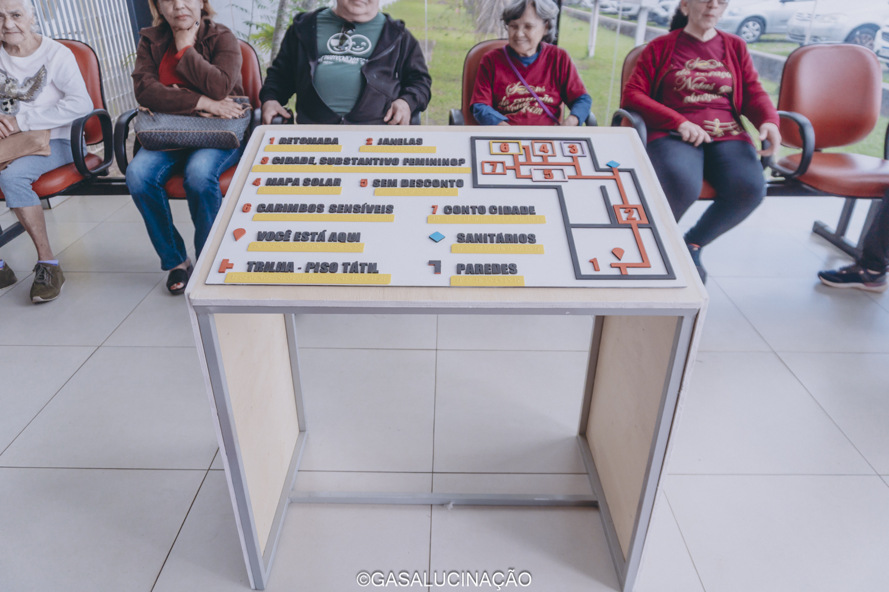
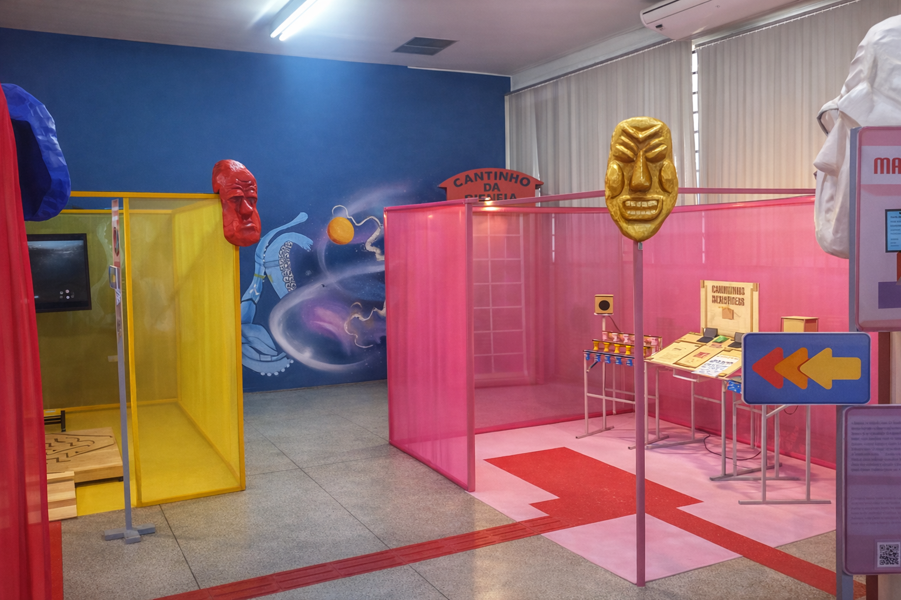
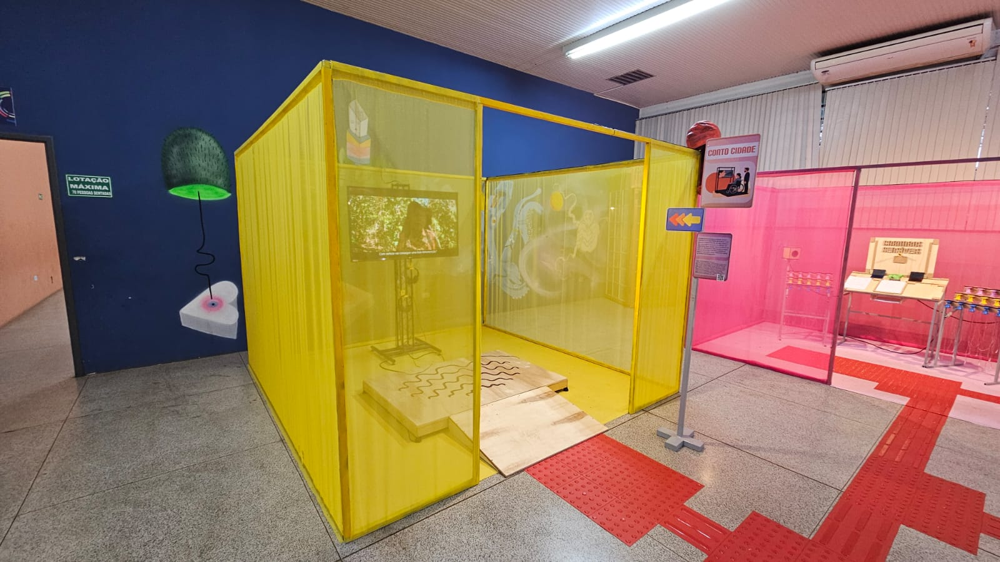
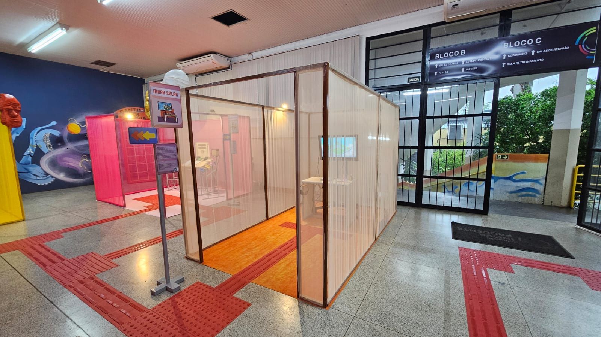
A expografia do Projeto Cidade Sensível é inspirada nas instalações têxteis do artista sul-coreano Doh Ho Suh. A proposta é criar espaços transponíveis, permeáveis e sensoriais, que convidam o público a circular e descobrir as obras de forma relacional. A arquitetura expositiva reforça a ideia de cidade como espaço de passagem, encontro e sensibilidade.
Sobre a estrutura: A exposição é formada por estruturas modulares de metalon, com fechamento em tecido semi transparente. Esses elementos criam espaços visualmente transponíveis, organizados como pequenas cabines ao redor das obras, ajudando a concentrar a atenção do visitante. A expografia é flexível e pode ser instalada em diferentes locais. A iluminação está integrada a cada cabine, garantindo autonomia e controle de luz.
Acessibilidade: A exposição foi pensada para ser acessível desde o percurso até a informação. Todas as obras contam com placas em linguagem acessível, com elementos visuais, braile e QR Code para audiodescrição. O espaço possui piso tátil, evitando barreiras de circulação, e um mapa tátil no início do percurso, auxiliando na orientação do público.
Ficha Técnica: Projeto e Coordenação Expográfica: Nathália Campos. Assistência: Henly Cézio e Bruna Parizi. Estruturas: Serralheria do Glória. Costura: Iracema Ardivino e Vera Campos. Produção Digital: GuiNani. Iluminação: Denizart. Coordenação de Montagem/Desmontagem: Xavier de Sá e Débora Bueno. Produção: Elora Carolina. Produção de Campo: Rafael Costa. Parceria: Fundação Inova Prudente
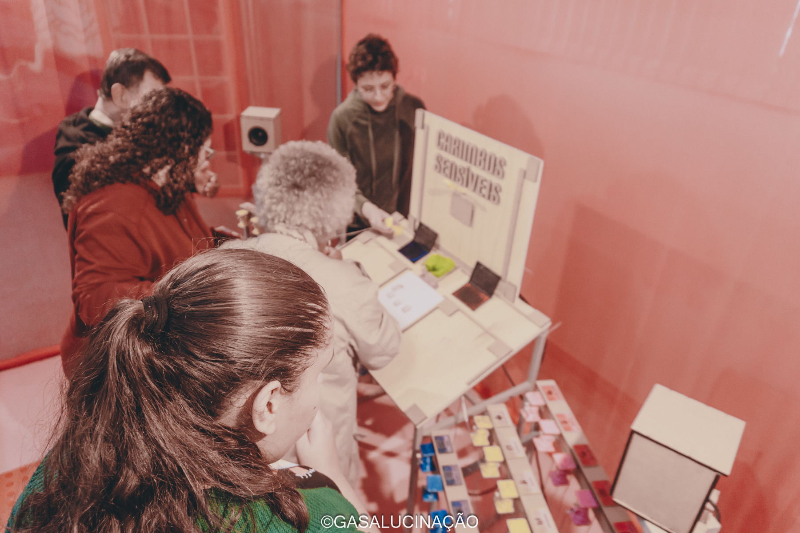
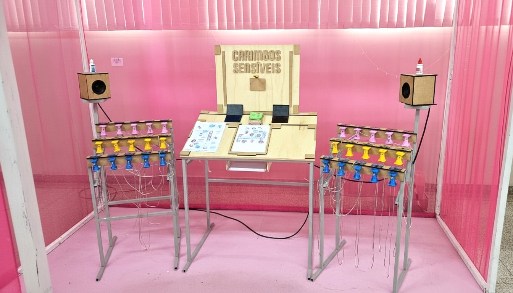
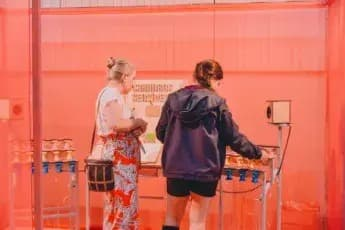
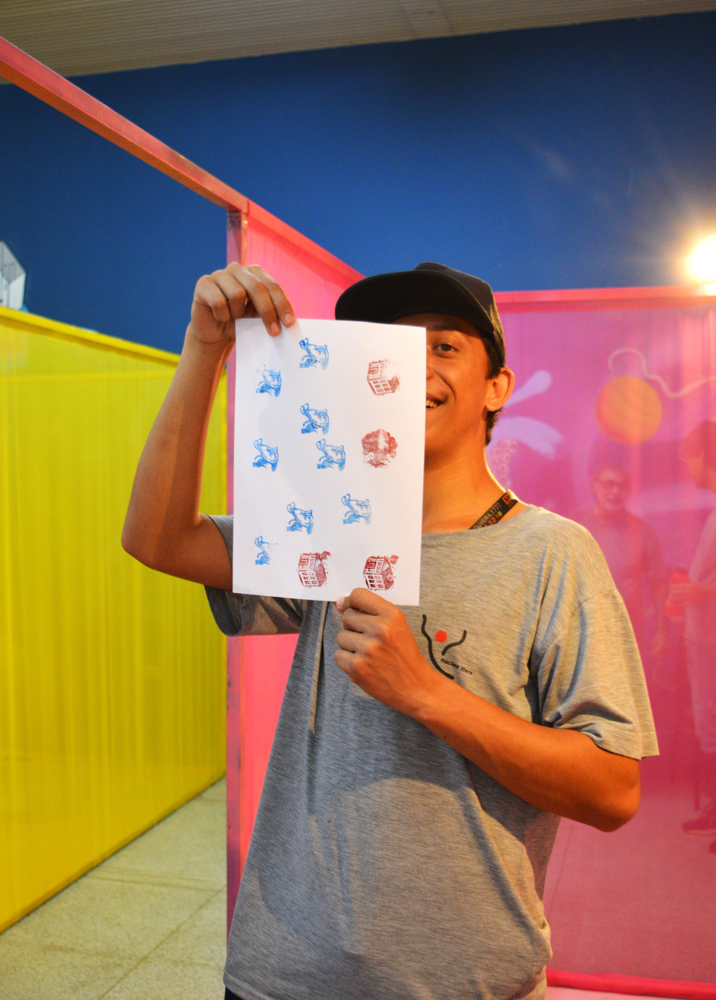
Carimbos Sensíveis convida o público a criar sua própria paisagem urbana e a compreender, de forma simples, como uma cidade funciona e como seus elementos se conectam. Os carimbos representam partes importantes do espaço urbano, como ruas, rios e trilhos de trem, além de equipamentos como prédios e escolas. A obra também inclui elementos lúdicos e imaginários, como casas voadoras e zumbis, ampliando as possibilidades de criação. A cada carimbada, um som correspondente é acionado, cada um com seu próprio ritmo, formando uma composição coletiva que une imagem e som. A experiência é participativa e multissensorial, envolvendo o corpo, o gesto e a escuta. A obra apresenta a cidade como um organismo vivo, construído aos poucos pelas ações individuais de cada pessoa.
Sobre a estrutura: 30 carimbos artesanais com diferentes gravuras, Mesa de suporte com câmera para leitura, caixas de som, papel e tintas, Acessibilidade: Carimbos com topo tátil, informações em braile.
Ficha Técnica: À frente: Túlio Moscardi e Gui Nani. Design de som: Rafael Costa. Programação Sonora: André Leite e Guinani. Direção Artística: Nathália Campos Desenvolvimento Tecnologia: Gui Nani. Assistência: Henly Cézio e Bruna Parizi.
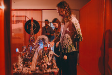
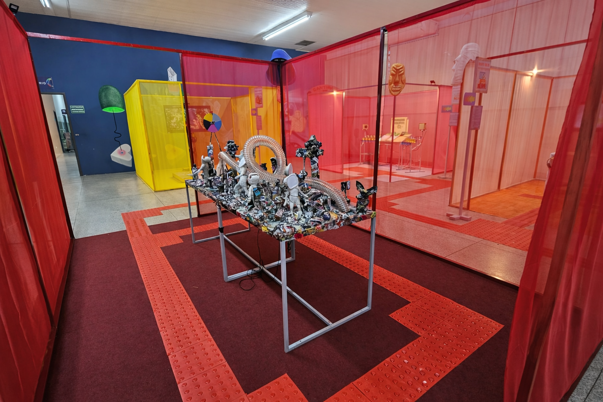
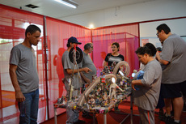
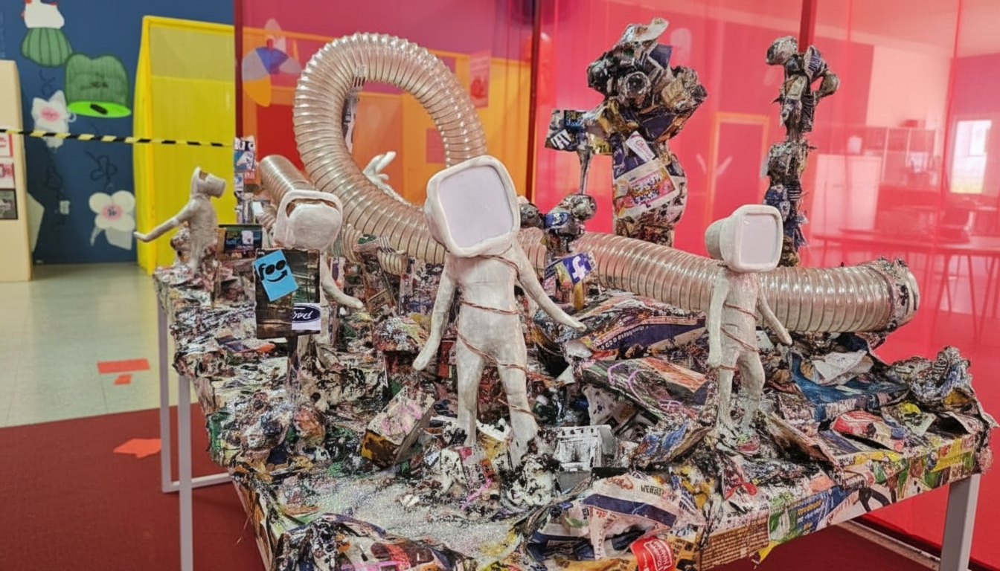
Sem Desconto traz como questionamento central: Qual é seu maior sonho de consumo? Inspirados na obra “O jogo da amarelinha” de Júlio Cortázar convidamos você a tocar em nossa cidade e descobrir quais poesias ela esconde. Mas cuidado, a nossa roda de fortuna pode ser cheia de altos e baixos. Toque na cabeça dos personagens para descobrir.
Sobre a estrutura: Uma maquete interativa feita com materiais reciclados que retrata uma cidade imaginária marcada por sonhos de consumo. O público gira uma roleta para escolher um tema e, ao tocar nos personagens, ouve versos de um poema cuja sequência muda conforme a interação.
Acessibilidade: elementos táteis em diferentes texturas, reatividade luminosa e sonora.
Ficha Técnica: À frente: Nathália Campos e Gui Nani. Escritor: Tadeu Renato. Direção Artística: Nathália Campos. Desenvolvimento Tecnologia: Gui Nani. Programação Sonora: André Leite e Guinani. Mediação e curadoria artística: Júlia Zanon Assistência: Henly Cézio e Bruna Parizi. Vozes: Lizis, Mateuzinho Umbigaê, GuiNani, Nathália Campos e Bruna Parizi
Retomada é uma instalação que fala sobre a importância do descanso na vida urbana. A obra convida o público a parar, respirar e descansar como formas de refletir sobre a cidade. Em meio à pressa do cotidiano, o descanso aparece como um direito e uma necessidade. A instalação também chama atenção para a falta de áreas verdes e para seus efeitos no corpo e na mente. Inspirada na obra Sonho Manifesto, de Sidarta Ribeiro, Retomada propõe o sonho como um gesto coletivo e político, essencial para imaginar cidades mais sensíveis e humanas.
Sobre a estrutura: uma grande árvore de tramas de tecido envoltas de uma estrutura metálica. Ela fica sobre um tapete redondo de palha com almofadas, plantas e estímulos táteis e olfativos. Ao lado uma rede com estrutura de bambu e fone de ouvido com um audioguia.
Acessibilidade: Toda estrutura é sensorial e traz possibilidades de interagir de diferentes maneiras.
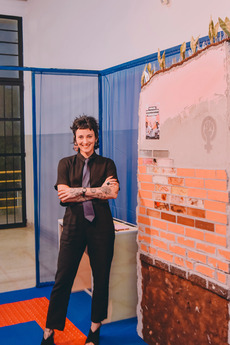
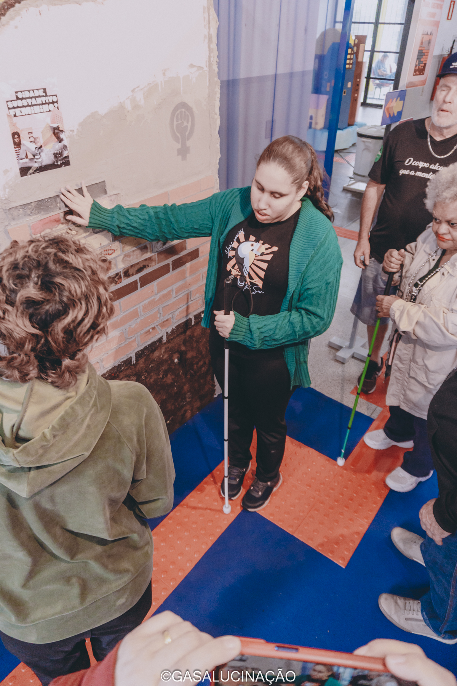
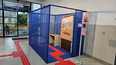
Cidade Substantivo Feminino? É uma obra que traz a cidade como território de disputas de gênero, memória e silenciamento. Embora a palavra “cidade” seja um substantivo feminino, sua construção histórica revela o apagamento das mulheres na ocupação dos espaços, no trabalho invisível e na violência que as atravessa. Entre o concreto e o silêncio, um corpo respira. O muro torna-se espelho e arquivo, guardando vestígios de resistência e potência feminina. Se a cidade é feminina na gramática, por que não o é na prática?
Sobre a estrutura: Escultura de 2,10m de altura. Acessibilidade: Mesa com dispositivos táteis trazendo os diferentes tipos de materiais presentes na escultura.
Ficha Técnica: À frente: Lizis. Mediação e curadoria: Júlia Zanon. Direção artística: Nathália Campos